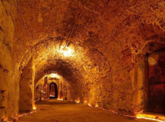

Екскурсії по Львову
Підземелля Львова
Тематична екскурсія підземним Львовом, тривалістю приблизно 2,5 години. Підземне місто манить до себе… Які таємниці воно від нас приховує?
Вечірній Львів
Легка вечірня екскурсія центром Львова, тривалістю 2 години. Львів у вечірній час виглядає по-особливому – освітлені вулиці, підсвічені будинки та храми.
Вулицями середньовічного Львова
Пішохідна екскурсія центром міста, тривалістю 2-3 години. Ця екскурсія найкраще підійде для людей, які вперше відвідують місто Львів та для тих, хто ще не гуляв Львовом в супроводі гіда.
Австрійський Львів
Екскурсія об’єктами австрійської спадщини міста Львова, тривалістю 2,5 години. Австрійський період в історії Львова тривав майже 150 років. За цей час було кардинально змінено архітектурне обличчя нашого міста. І зміни ці вийшли на краще.
Екскурсії за місто
Золота підкова – Замки Львівщини
Автобусна екскурсія замками Львівщини: Підгорецький, Золочівський, Олеський замок та обід по маршруту, тривалістю 1 день. Довкруги Львова збереглося чимало пам’яток старовини, в тому числі чудових замків.

Королівське місто Жовква
Екскурсія в королівське місто Жовкву та до Крехівського монастиря, тривалістю 1 день. Не тільки у Львові збереглася чудова архітектура, не тільки столиця Західної України вабить до себе подорожніх.

Озеро Синевир і водоспад Шипіт
Автобусна екскурсія до водоспаду Шипіт, підйомника на гору Гимба та озера Синевир, тривалістю 1 день. Вирушаємо зі Львова приблизно о 7:00, такий ранній виїзд необхідний, адже дорога довга.

Підйомник Захар Беркут і фортеця Тустан
Автобусна екскурсія зі Львова до скельної фортеці Тустань, підйомника Захар Беркут та Кам’янецького водоспаду тривалістю 1 день. Робимо ранній виїзд зі Львова (8:00 або й раніше) і прямуємо в Карпати